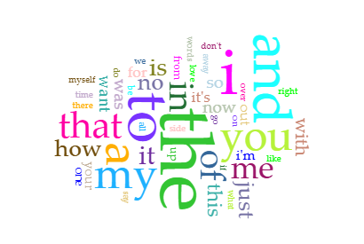
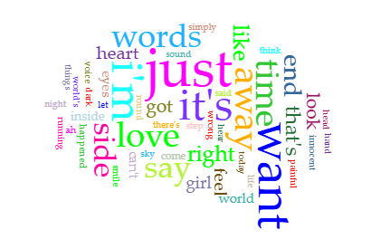
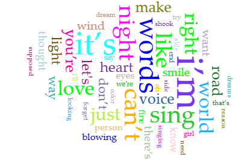
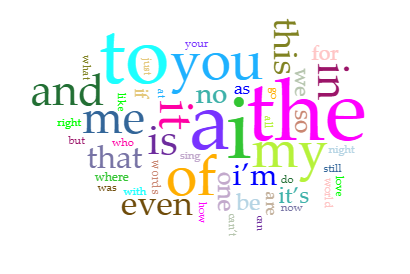
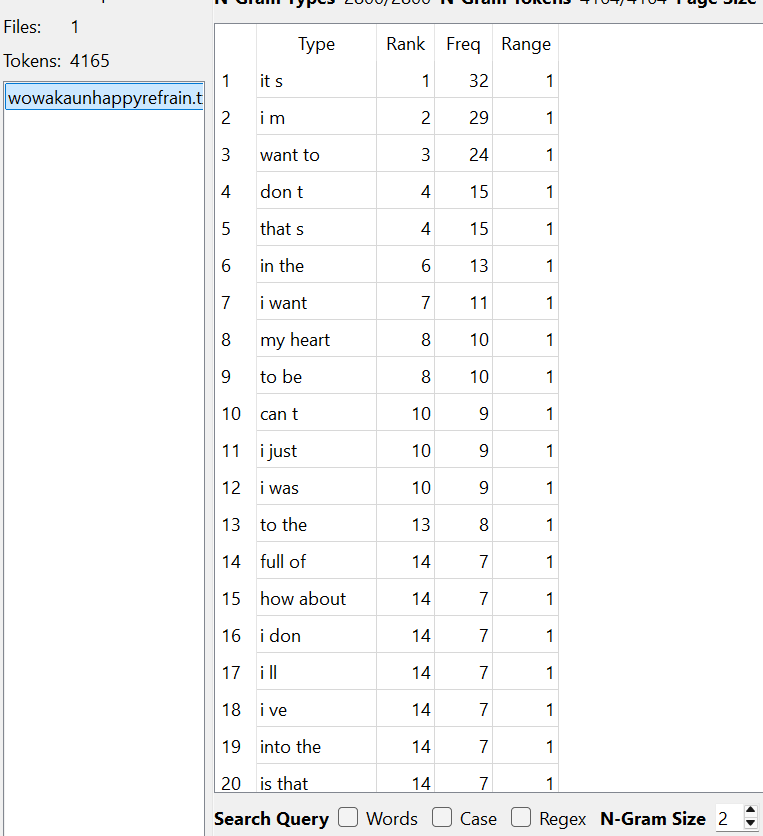
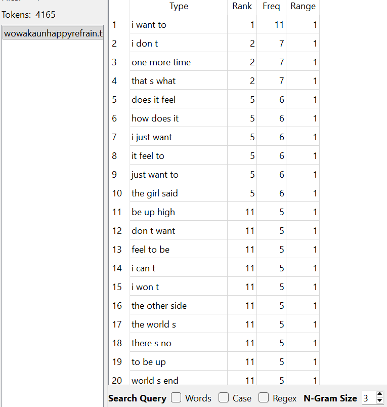
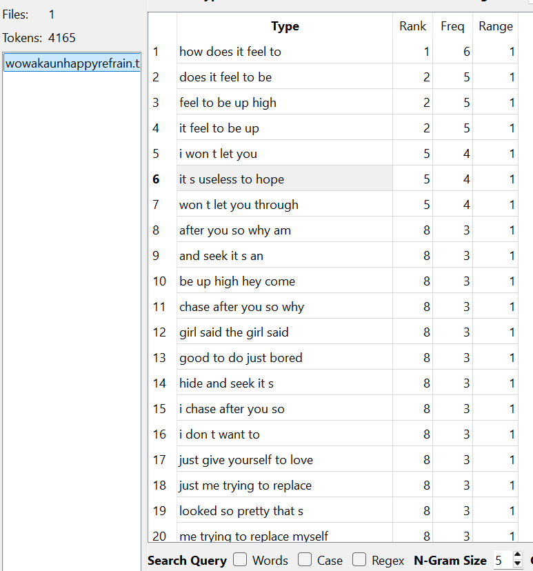
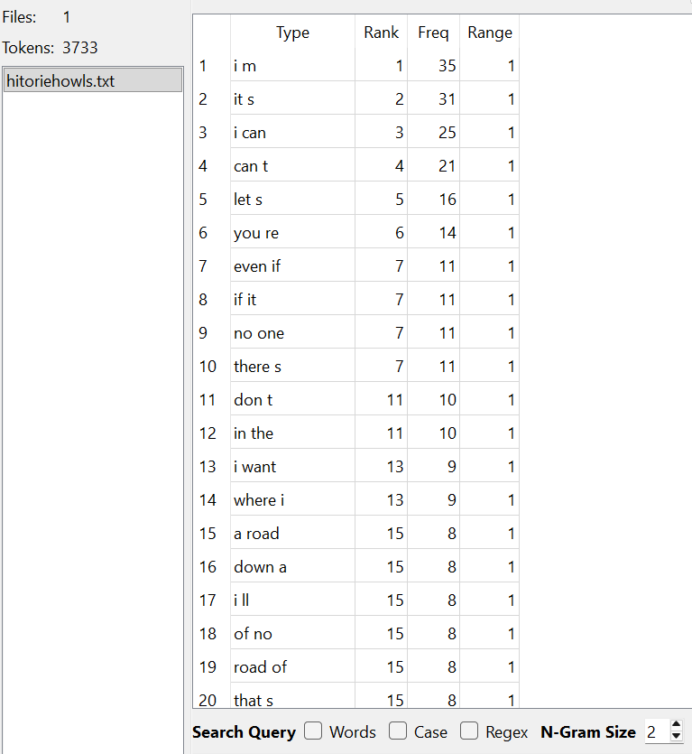
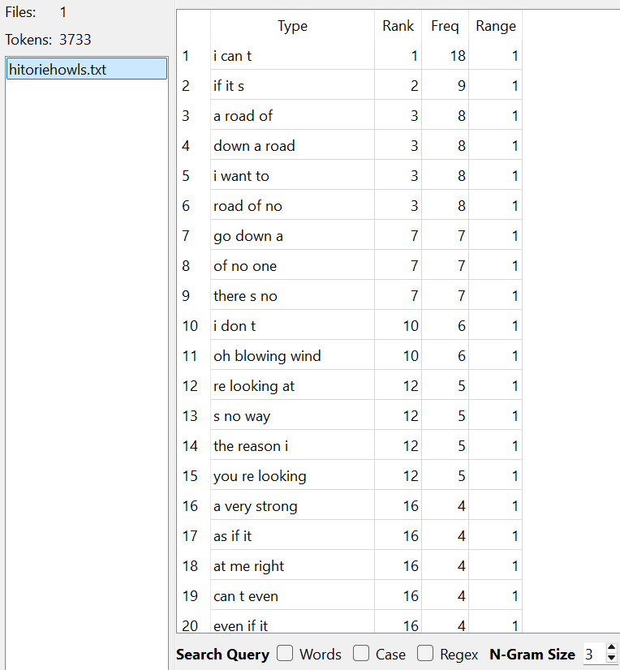
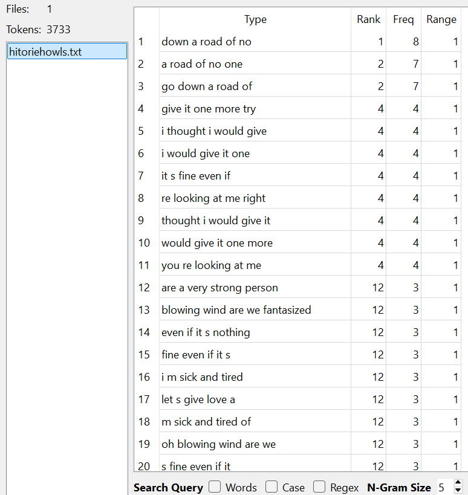

For me, the initial hurdle to get over was the massive amount of information at my fingertips and not knowing where to start. There are so many commands and formatting things and elements and attributes (plus a whole ton of jargon!) that is quite intimidating for a beginner using HTML and coding for the first time. It's easy to forget to put certain parts of the code; for example, forgetting any one of the elements of "a href="link"" (you can see in this version of the reflection that I can't include the arrow brackets or it can break the code) would make the function break or not execute correctly, and if you're not using an active code editor and previewer, you may not catch it.
WordPress is also a lot of information at once, with menus full of unfamiliar icons you're supposed to recognize but aren't actually as intuitive as WP may think they are. Seriously--the Settings icon being some weird slider instead of the gear that is used in many designs across the web is confusing. Oxygen also has many menus to browse, but it felt a lot less overwhelming than WP, or at the very least overwhelming in a different way.
WordPress, when being written on, is a lot cleaner. You don't have to look under the hood and type elements for organization and formatting, you can do it easily and seamlessly with the tools provided and one or two clicks. But that also means it's more restrictive than Oxygen and Git, because you rely on the tools you're given rather than being able to do whatever you'd like. For Oxygen, while you have to write the formatting and code yourself (which means research and trial and error), it also allows for more freedom.
Oxygen is a lot of reading and trial and error, but once you understand how to format, you can play with it further and break it intentionally. WordPress is a lot more confusing when it breaks, because you don't know how to fix the images not lining up with each other despite all signs pointing toward the fact that they should be able to.
WordPress works fine for anyone who's used Word or Docs before, and you can figure out what familiar buttons do and roughly grasp the idea. With Git and Oxygen, there's a need for patience and willingness to learn a new skill, which for some may be a barrier for entry. Good memory or even note taking is helpful, and is good to reference and utilize when using Oxygen and Git both.
I don't foresee myself using WordPress again after this class, mostly because I have little reason to make myself a website currently. Git I may get more use out of, simply due to the more creative aspects that I can apply to make my social media and other things prettier and more enticing to browse and look at.
The two texts I decided to compare were wowaka's 2011 album Unhappy Refrain and Hitorie's 2019 album HOWLS.
wowaka is a solo producer who used a software called Vocaloid, a voice synthesizing program in which vocalists have given recordings to YAMAHA in order to analyze and create an instrument. Released in 2004, the original two iterations of the project were Leon and Lola, called "Virtual Soul Vocalists". That same year, YAMAHA, in collaboration with Crypton Future Media, created the first Japanese Vocaloid named Meiko, closely followed by a masculine voice named Kaito.
For the second iteration, aptly named Vocaloid 2, the now flagship character Hatsune Miku, voice provided by Saki Fujita was created and released in 2007, which was a massive hit with consumers and is still used (albeit in more updated forms) today. Why is this relevent?
Well, in 2009, wowaka produced and released his first song titled "In The Gray Wone" using the Vocaloid software after quitting his band. He continued to create music, known as Genjitsutouhi-P, and quickly grew popular on a Japanese video sharing website called Nico Nico Douga. In 2010, after self-publishing his own album, he helped create a record label named Balloom along with several friends, who were also Vocaloid producers.
Under the Balloom label, he published his debut studio album Unhappy Refrain, which was met with critical acclaim within the community and even became popular overseas in the United States. He has gone down as one of the most influential Vocaloid producers of all time.
Also in 2011, he joined with some friends and founded the band Hitorie. The album of theirs' that I am analyzing alongside Unhappy Refrain, HOWLS, was released February 2019, the last album of theirs' released before wowaka suddenly passed in his sleep from heart failure.
In this analysis, paragraphs relating to wowaka's Unhappy Refrain will be coloured in cyan. Paragraphs relating to Hitorie's HOWLS will be coloured in orange.
To begin;Unhappy Refrain has 3,995 total words and 985 unique words (about 24.65% of the words are unique). HOWLS has 3,525 total words and 825 unique words (about 23.4% of words are unique), leaving Unhappy Refrain as the bigger text by 470 words and 160 unique words.

This is the word cloud for Unhappy Refrain. You can see the most common words used within the album are; just (36); want (26); it's (26); i'm (23); time (18).This is the 50 word cloud with stopwords automatically filtered out. I found it interesting that of all words, just was the most common. Some instances of it's use in the text are "Doesn't it hurt just to look at?" (from the lyrics of the song "Unhappy Refrain"), "I just wanted to say I love you" (from "Reversible Doll), and "please, just leave me alone" (from "Toosenbo"). The second most common word is want, tied with it's.

This second image is the is the 50 word cloud with stopwords on, which I find equally interesting. The word occurrences are as follows; i (169); the (166); to (119); and (87); a (73). I showing up so often was interesting to me.

This is the word cloud for HOWLS. The most commonly occurring words are; i’m (30); it’s (27); words (19); sing (18); night (18). Once again, this is the 50 word cloud, with stopwords automatically filtered out. Some instances of I'm are "I’m not the one you’re looking at though, huh?" (from "Sleepwalk"), "I’m sick and tired of hearing about methodologies or right and valid theories" (from "Coyote and Ghost"), and "Unknowing yet still I’m smiling unfazed so" (from "Windmill").

This, just like above, is the 50 word cloud with the stopwords on. The most common occurrences for this one are; i (146); the (110); to (101); a (92); of (63). Once again, I was the most common result, though lower than the Unhappy Refrain album. Though, given the differences in the sizes, I'm curious if it'd roughly the same amount.



These are the 2, 3, and 5 ngram result for the Unhappy Refrain album respectively. The most common for the 2 ngram were "it s" with 32 hits, followed by "i m" at 29 and "want to" at 24. The 3 ngram had "i want to" at 11 and a three way tie for second between "i don t", "one more time", and "that s what" with 7 occurrences. The 5 ngram has "how does it feel to" at first with 6, and another three way tie between "does it feel to be", "feel to be up high", and "it feel to be up" with 5 occurrences (which are from the same sentence that occurs 5 times). In total, Unhappy Refrain has 4165 tokens to analyze.



These are the 2, 3, and 5 ngram result for the HOWLS album respectively. The most common for the 2 ngram were "i m" with 35 hits, followed by "it s" at 31 and "i can" at 25. The 3 ngram had "i can t" at 18, "if it s" at 9, and a four way tie between "a road of", "down a road", "i want to", and "road of no", all with * occurrences (three of which coming from the same sentences). The 5 ngram has "down a road of no" at first with 8, a two way tie for second with "down a road of no" and "give it one more try" at 7, and an eight way tie for third. In total, HOWLS has 3733 tokens to analyze.
It was surprising to me how similar the albums were. Unhappy Refrain has 7 songs on the album for a total runtime of 29:45. HOWLS has 9 total tracks and a runtime of 37:08. With statistics like this, it's surprising that Unhappy Refrain has both more tokens and more words / unique words--however, I believe there's an identifiable reason for this, and it requires a bit of context.
For one, Hitorie's songs tend to stretch words a bit more and linger on sentences. At least on the HOWLS album, many of the songs are slower. Unhappy Refrain, conversely, is known for being incredibly fast having a high BPM and cramming many lyrics in each line. The titular song itself is 205 BPM, with 493 words in 3:46. The song with the most words on HOWLS is "Coyote and Ghost" at 658 words in 4:36.
The second reason I believe this is is because both albums are originally in Japanese, and there can be changes when translated to English. The entire HOWLS album has been translated by the wonderful Manjuhitorie on Tumblr, which includes context for why they translated each song in the way that they did. The benefit of this over machine translation is that human translators can understand intent and nuance, as well as artistic choices that were made. They often translate accordingly, and then must restructure the translated lyrics into similar meanings using different words to keep rhyming and the message / story. Conversely, the lyrics for the Unhappy Refrain album were taken from two different places; most of the lyrics are from the VocaloidLyrics Wiki as well as the Vocaloid Fandom Wiki for World's End Dancehall (a song on the album). The biggest issue with this is it's collaborative, so there may be some official lyrics, but for the most part the lyrics are submitted and translated by many different individuals (one of them being releska, who requests credit on his blog!).